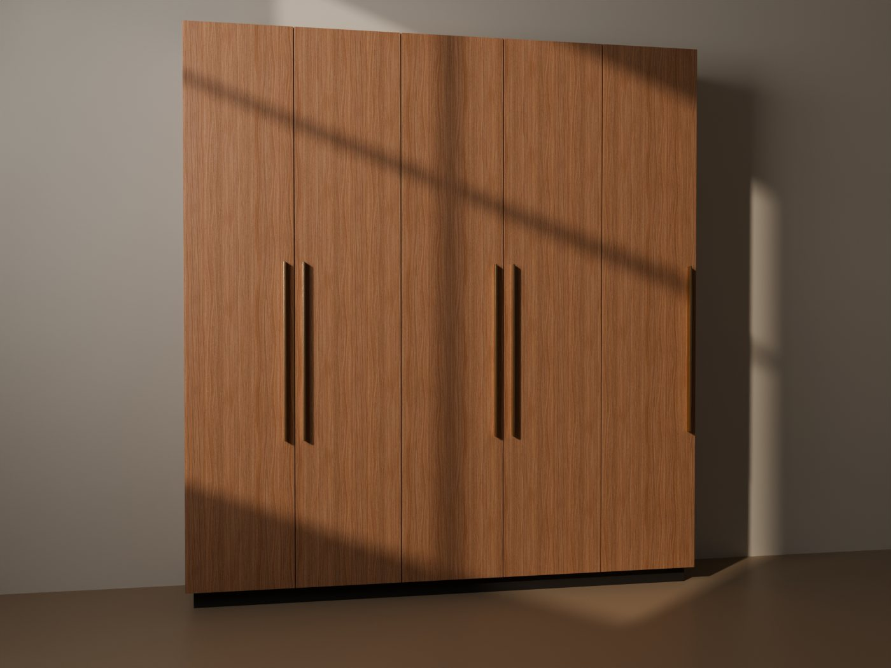
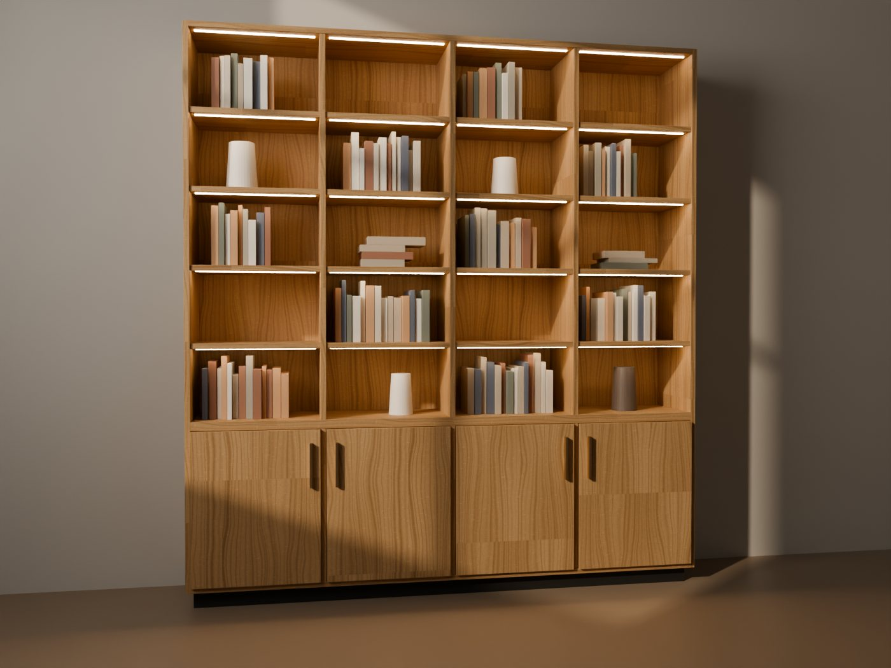
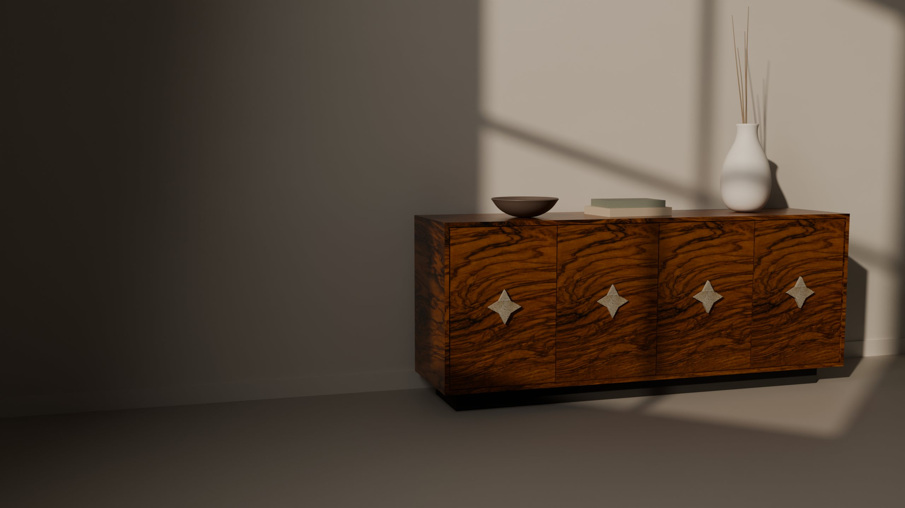

Falegnameria artigiana · dal 1987
Il legno prende forma. Il tuo spazio diventa unico.
Progettiamo e costruiamo arredi su misura nel nostro laboratorio di Borgagne di Melendugno: cucine, armadi, boiserie e librerie pensati per una sola casa.
STELLA · render del modello
L’atelier
Ogni arredo nasce da un disegno, una misura e una materia scelta con cura.
- Su misura
- Nessun modulo standard: ogni pezzo segue le proporzioni del tuo spazio.
- Materia
- Legni, laccati, pietre e metalli scelti dal vero, campione per campione.
- Precisione
- Dettagli costruttivi e finiture curati in laboratorio, dall’inizio alla fine.
Materia e dettagli
Avvicinati. Ogni dettaglio ha una ragione.
Testi dei dettagli da validare con l’atelier.
Radica d’olivo
Le quattro ante del fronte sono rivestite in radica d’olivo, dal disegno caldo e irregolare.
Lavorazioni
Cucine, living, armadi, librerie, boiserie.
-
 Render dimostrativo
Render dimostrativo
Cucine su misura
Basi, colonne e piani progettati sulle misure reali della stanza.
-

Render dimostrativoArmadi e cabine armadio
Pareti contenitive a tutta altezza, organizzate dentro come servono a te.
-
 Render dimostrativo
Render dimostrativo
Boiserie
Rivestimenti che disegnano la parete.
-

Render dimostrativoLibrerie e pareti
Moduli, vani e luci attorno ai tuoi oggetti.
-
 Render dimostrativo
Render dimostrativo
Arredi unici
Pezzi come la madia STELLA.
Progetti
Il dettaglio è il progetto.
Qui andranno le fotografie dei lavori consegnati da Ramirez Atelier. In attesa delle foto, questa sezione resta vuota: nessuna immagine dimostrativa viene presentata come lavoro reale.
-

STELLA · madia in radica d’olivo -

Libreria in noce -
Boiserie in rovere -
Cucina laccata -
Armadio in noce -
STELLA · dettaglio
Preventivatore
Componi la tua libreria e ricevi una stima indicativa.
Moduli, misure e finiture, poi la stima calcolata sul nostro listino. Il progetto vero lo definiamo insieme.
Metodo
Dal primo incontro all’ultima regolazione.
-
Ascolto
Abitudini, oggetti da custodire, idee anche solo abbozzate.
-
Progetto e misure
Disegno e rilievo definiscono proporzioni e funzionamento.
-
Materiali
Legni, laccati, pietre e ferramenta scelti dal vero.
-
Realizzazione
Ogni pezzo prende forma e viene rifinito in laboratorio.
-
Installazione
Montaggio e regolazioni finali a casa tua.
Parliamone
Raccontaci il tuo spazio.
Misure, foto, ispirazioni: anche un’idea abbozzata è un buon punto di partenza.
Borgagne di Melendugno, 73026